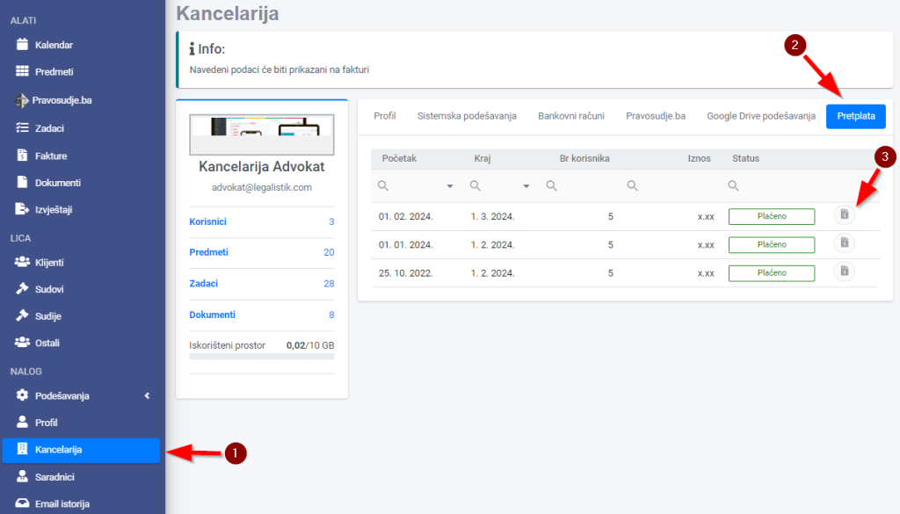

Ako želite da pregledate i preuzmete svoje plaćene fakture, otvorite link Kancelarija u meniju i izaberite karticu Pretplata. Klikom na ikonu na desnoj strani fakture, preuzećete dokument koji možete proslijediti ili odštampati:

Izvor: https://legalistik.com/docs/kako-da-pogledam-i-preuzmem-placene-fakture/
Ako želite da pregledate i preuzmete svoje plaćene fakture, otvorite link Kancelarija u meniju i izaberite karticu Pretplata. Klikom na ikonu na desnoj strani fakture, preuzećete dokument koji možete proslijediti ili odštampati:
